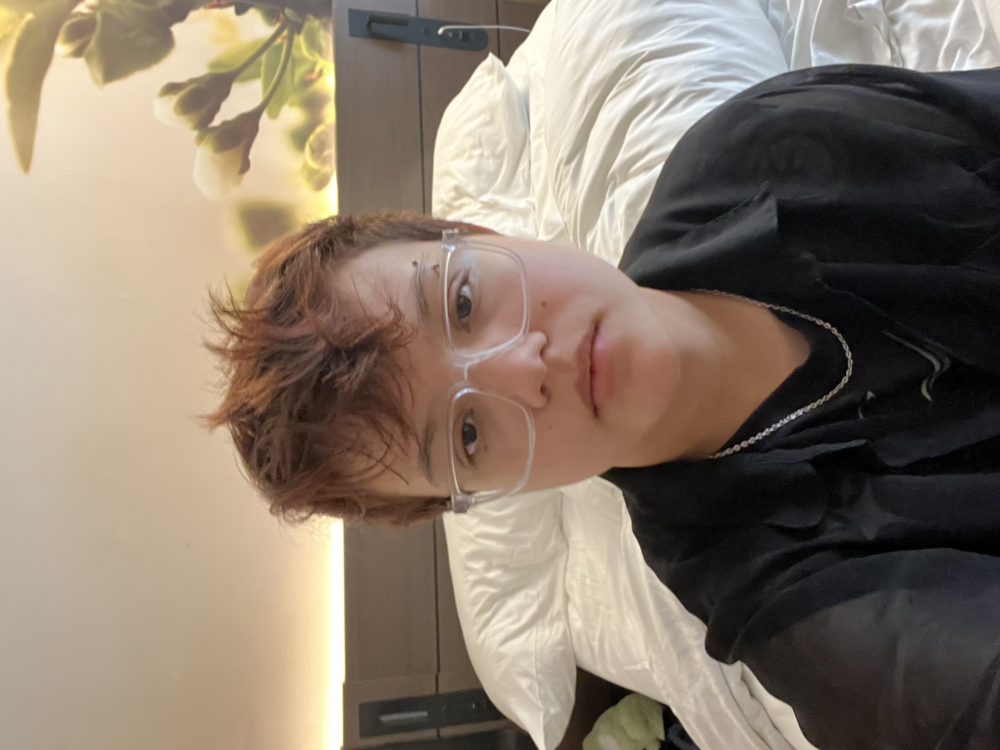

About Me
Currently in the second semester, first year, of Graphic Design at Algonquin College. I am eager to learn and grow in my field. I have been interested in creative fields for a very long time. I have been known to be overly organized and detail-oriented. I am also an illustrator, doing a range of mediums like painting, drawing, digital art and more. I also enjoy occasionally playing music on my bass guitar.
In my personal life I enjoy spending time with my large family, as well as friends. I also spend time with my three cats when I'm not working at my part-time job at Tim Hortons. Playing video games is also a hobby that I am fond of.
"Keep your face always toward the sunshine and shadows will fall behind you." (Walt Whitman)
My Skills
- Illustrations
- Concept Sketching
- Problem-Solving
- Time Management
- Organization
- Adobe Creative Suite
Graphic Design Courses
- Graphic Design
- Concept Sketching
- Typography
- Computer Graphics
- Web Design
- Communications